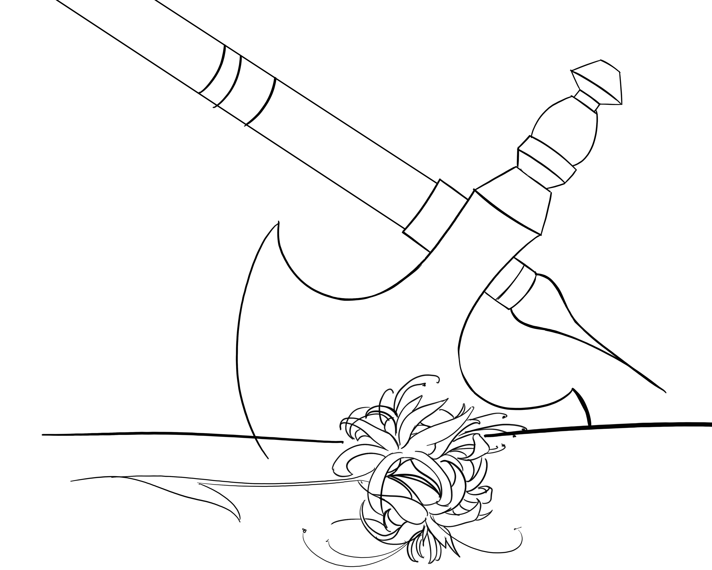

“So what's this all, then?”
You continue forward with purpose, unsheathing your axe as you get closer.
“Aww man, not this $#%^…”One of the elves groans as he rolls his eyes, his head lulling into a shrug.
“Oh hey there Vel'as, you're a sight for sore eyes.”The loudmouth continues...
“Maybe you can help us out a bit? Ulf'ren here has been holding out on us. Here we are, all struggling to find these stupid flowers for the ritual, and he's been hoarding them. Now he's gotten all clumsy and dropped them.”He takes a step forward, about to crush one of the blooms under his heel.
“Oops, see, there I go stepping on-”
You throw the axe.

You managed to miss the next bloom he was about to step on, but it was close enough to threaten his next
step.
“The one thing I hate more than liars are people that attack from behind.”
“Is that so? I guess it's going to be hard for us to see eye to eye then. This seems like it's going to be a pretty unfair fight, the three of us against you. And your axe seems to be all the way over here.”
“We both know I don't need my axe to beat you and thankfully Ulf'ren has my back.”
Ulf'ren jolts, lifting his head, his blue eyes meeting yours.
The sad vacancy had been replaced with tentative joy as he nodded. He looked like a forlorn puppy that started wagging its tail. He betrays a smile as you nod back to face the troupe.
Without a second to spare another though, loudmouth and crew lunge. You've fought each of these elves in one on one in sparring matches, but this is the first time in a group fight. One of them picked up your axe but clearly had issues managing its weight. After a bad swing, you were able to catch, then twist the arm of the culprit and wrest control of the axe back and push him away. Turning, you see that Ulf'ren was able return the favor of his bloody ear with a cut lip on loudmouth. The threat of the axe back in your hands seems to have diffused the attack and troupe backs off.
“Enough, we're done here!”
“Better watch yourself on the sparring grounds, let's go…”
They run off. A chuckle remains in your throat at the thought of being able to push their faces into the dirt in fields.
You watch as they go and listen for their foot falls to disappear and Ulf'ren manages to salvage two of the blooms. With a defeated sigh, he sits, then rolls onto his back. You walk over and look down at him.
“You know you shouldn't let them mess with you like that. I've seen you fight. You probably could have taken either of them on your own. How are you supposed to protect anyone if you can't protect yourself…”
He opens his eyes; this time they hold a tinge of hurt and sadness.
“Is that what you're doing this for? To protect other people?...”He says this through a sigh.
The question gives you pause. That's what you're all here for, to become a part of the guard.
There's nothing else.
“Are you serious?”
There's an awkward silence as he studies your face and you stare back at him.
The longer you linger here, you heart beats a bit faster…
Or is it your stomach turning? You try to register what's happening on your insides and realize that you're lost in thought as still starting in his general direction and he sits up. You catch a glimpse of crimson.
“Oh, may I?”
You break the silence and point to your own ear mirroring his bleeding one.
“Oh, yeah...sure...”
You kneel, grab some makeshift cloth bandages from a satchel hidden under your skirt overlay.
Taking the side of his face in your hand, you tilt it, and begin working to clean the wound.
He is oddly warm. It's probably due to the swelling but cleaning out the wound should stop any infection. You finish working at it and notice Ulf'ren it completely averting his gaze from you.
“Ah… sorry, I don't like being touched either. Your ears are red, sorry about that, but the swelling should go down…”
You feel guilty for holding his face for so long. That cleaning tincture also stings; you forgot to warn him about it… It probably felt uncomfortable…
Now you feel uncomfortable…
“Wheeeelp… Good luck then, I have to figure out what I'm going to do now…”
“Ah wait, uh. Do… Do you need help? With the blooms, I mean….”
Thinking about the offer, you brush your hand against the single bloom in your pack.
You could use the help… But this was already so much trouble for one day and you might not be feeling so well.
On one hand, he collected enough blooms on an outing for the ritual but on the other hand, these types of offers come with a price. It's the way of the fey, after all. What can you offer him in return?